for
0<x< . for
0<x< . |
DIFFERENCE
EQUATIONS
& RECURSIVE RELATIONS
(1801-1825)
Ordinary arithmetic calculating machines, in Babbage's day, could only carry out individual calculations.They were useful only in the computation of single sums involvingaddition,subtraction, multiplication or division. Charles Babbage worked on a calculating machine that could be adapted specially to performthe Method of Differences. The Method of Differences is away of integrating"differences". A"difference", written D f(x), is simply the difference between the values of a function taken attwodifferent values of its variable, x. For example: Df(x)=f(x1)-f(x2 ). A "differential" is much the same thingexcept that the difference between the two valuesof x used, x1andx2, is reduced [gradually by a limiting process] by an infinitesimalamount, df(x). A "differential" is thus an infinitesimal "difference".Conversely, a "difference" can be seen as akind of finite"differential",one which uses an interval of a finite sizeinstead of an infinitesimal.
The Method of Differences is a practical numerical technique. It can beused to calculate exactly the numerical values of any mathematical functionthat can be expressed as a simple polynomial . Perceivingthe simplicity and facility of the Method of Differences andthe arithmeticoperationrequiredto execute it, Babbagerealised that its principles could be very easily embodied insimplemechanicalcomponents. These insights led him, in 1821, to designanddevelopa DifferenceEngine. This differenceengine only required mechanisms foradditionrepeated manytimes over to perform the tasks Babbage hoped for . A clearer understanding of the mathematics of the Method of Differences is essential ifone is to understand Babbage'svision, and gain a better pictureof the mechanics of his creation, its operations,capabilities, limitations,andthe manner in which it was expected to achieveits object.
Methods or algorithms for evaluating functions or solving equations by recursion, ( the repetitive substitutionof the approximate solution of an equation backinto itself to obtain a betterapproximation), had been devised asearly as the late 17th century. Nevertheless, the Method of Differencesdidnot becomea clearly identifiable, branch of numericalmathematics untilsome time after Brook Taylorenunciated the famous theorem which bears his name ( Taylor's Theorem) during the 18th century. By Babbage's time,however,the Methodof Differences had been in use for a long while and withmuch success forthe manual calculation of mathematical and other types ofnumerical tables.It was a well-tried and firmly established techniqueofNumerical Analysis,and its theory was well understood. What made it an idealprinciple for the automatic, mechanical computation of such tables was that,in its use, the same sequence of simple arithmetical operations is repeated overand over again. Therefore, a machine designed to imitate it only needed thosemechanisms for repeating these same operations.
What makes theMethod
of Differences a practical proposition for the interpolation of the numerical
values of functions is a theorem which states that the nth differenceofapolynomial
of degree n is a constant, and that all its differences of ahigherorder
are zero and can therefore be ignored. As a result, when one isdealingwith
the evaluation of polynomials, one need only work with a finite setofdifferences.
One starts with the assumption that one is tabulatinga polynomialfunction
of the nth degree. Consequently one may also assumethat itsnth difference
is always a constant and having been given or havingascertainedstarting
values for the function itself and its n levels of differencesonemay calculate
from these, by adding them together in the correct orderrepeatedly,a full
table of values for the function at the fixed and specifiedinterval,aprocess
comparable to Integration.
It will befound that
this procedure can be used, in general, to generate in sequence,a full
table of values for any function, for a given, fixed interval ofvalues
for x. In principle all one needs is the starting values of the functionand
its 1st to nth differences,and the assumption that the nth differenceis
a constant. Once these are specified then a complete table of valuesfor
any functionand all its differences can be produced by iteration. Ifone
is tabulatinga polynomial function of the nth degree, then this willbe
found to be anexact process, otherwise it will be found that it producesa
seriesof reasonablysatisfactory approximations.
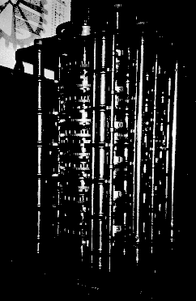
The Difference Engine was only partially completedwhen
Babbageconceived the idea of another, more sophisticated machine
called an Analytical Engine. Interestingly enough, more than one hundredand
fifty years after its conception, one of
Babbage'searlier
Difference Engines waseventually constructed fromoriginaldrawings by a
team at London's ScienceMuseum. The device
performedits first sequence of calculations in the early 1990's and returnedresultsto31
digits of accuracy, which is far more accurate
than thestandard pocket calculator.However, each calculation requires theuser
toturn a crank hundreds,sometimes thousands of
times. Babbageworked
on his Analytical Engine from around 1830 until he died, but sadlyit was
never completed. It is often said
that Babbagewas
a hundred years ahead of his time and that the technologyof the daywas
inadequate for the task.
Friedrich Wilhelm Besselwas
a German astronomer and mathematician,best known for making the firstaccurate
measurement of the distance to astar. He established theuniform system
for computing star positions that is still in use. In the investigation
of problems connected with planetary perturbation,he introduced into mathematics
the Besselfunctions
as the solutionsof certain differential equations. The functionsare of
great importance in determining the distribution and flow of heator electricity
through a circular cylinder and in the solution ofproblemsconcerning wave
theory,elasticity, and hydrodynamics.
Bessel'sdifferential equation is as follows:
|
|
The Besselfunction
can be defined as a particular solutionof Bessel'sdifferential
equation (1). Here, G is used to denote the gamma function
(See Gaussbelow
for information on the gamma function). Using the properties of the
gamma function,we get Bessel'sfunction
to be:
|
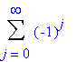 /(G(j+1)G(j+s+1))*(z/2)2j+s. (2) |
| Js 1(z)=(s/z)Js (z) J'(z). (3) |
| Js-1(z) + Js+1(z) =(2s/z)J s(z). (4) |
The Fareyseries
FN is the set of all fractionsbetween 0 and 1
written in lowest terms. The denominators of thesefractions donot
exceed N ( where N is the order of the series) and they arearranged inorder
of magintude. In 1816, Fareypublished
a statement in whichhe declaredthatthe middle of anythree successiveterms
in the Fareyseriesis
the mediantofthe other two. It was Cauchywho
eventually supplied the proof of this statement.
A proof of this statement is as follows:
Start with F1 which is 0/1,1/1.
In order toget F2, insert the mediant intoF1
:0/1,1/2, 1/1.For F3 we add two mediants: 0/1,1/3,1/2,2/3,1/1.
To get F4 we also add only 2 fractions: 0/1,1/4,1/3,1/2,2/3,3/4,1/1.
Next, add 4 fractions to get F5:0/1,1/5,1/4,1/3,2/5,1/2,3/5,2/3,3/4,4/5,1/1.
The general rule is this: to move from FN-1 to F
N add all possible mediants (that come out to be in the lowestterms)with
N in the denominator. Since forming a mediant may only increasethe denominator
weare led to think that following this rule we indeed willget the wholeof
FN. To complete the proof we refer to the
Stern-Brocot tree which contains all positive fractions.Soin
the process of constructing a Fareyseries
no fraction will be missed.
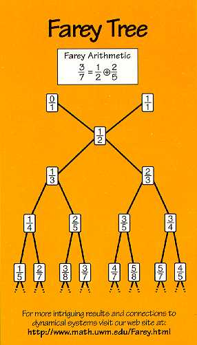
When N is prime, the rule adds N-1 fractions. In general, (N) fractions are added. For all reducible fractions m/N will have appeared in one of the earlier series.
The Fareyseries
is important in theproof of a corollary of Euclid'salgorithm.
The algorithm is as follows:
For integers m and n with gcd(m,n) = 1 and m/ n, there exist positive
integers a and b such that ma - nb = 1. The proof relies on the properties
of the Stern-Brocot
tree. For any two consecutive fractions m1/n 1
and m2/n2 in the Fareyseries,
m2n1- m1n2=1. So,depending
on whether m or n is larger, locate either m/n or n/m ina
Fareyseries and select (asa/b) eitherthe precedingor the following
fraction.
The gamma function is useful more for its relationship to other functions than as a solution by itself of some problem. It arises in simplifyingthe evaluation of some infinite or improper integrals and in the solutionofdifferential and difference equations arising in probability theory,statistics,mathematical physics, and engineering mathematics.
|
for
0<x< . |
The integral converges because the exponential makes it smallass->
. As s->0, thefactor s^x-1 is
integrable becausex>0.
The gamma function is a generalization of the factorial.
In fact, it has the following properties:
| G (x+1)= x G(x). |
| G(n+1)= n! , if n is a positive integer. |
| G(1/2)
= 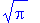 |
Another useful identity with respect to the gamma function is:
|
G(x) = (2x-1)/( ) G(x/2)G(x+1/2). |
This can be used to give another derivation of the gamma function on the "half-integers."
The formula for the surface area of the sphere of radius R in n
dimensions is:
| An=( 2 pn/2 Rn-1 )/G(n/2). |
Let V(t) measure the size of the tumor (e.g. volume, number, etc.)
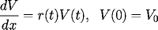 |
|
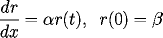 |
Here
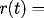
tumor growth,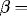
initialgrowth or regression rate.The sign of beta determines where the tumor grows or regresses. The solution is given by:
|
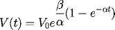 |
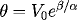 |
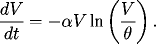 |
To determine the tumor regression from just before one treatment to
justbefore the next, we integrate the first order differential equation
as follows:
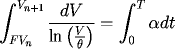 |
This leads to thedifference equation:
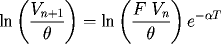 |
In problems of spherical symmetry, one encounters Legendre'sdifferentialequation:
|
|
Here y= l(l+1) for some integer l >=0.
This equation is easily solved by the power series:
|
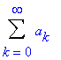 zk. |
When we substitute the power series into
Legendre's differentialequation, we get:
|
|
We next replace k-2 by k in the first sum. The coefficients
of the like powers of z must match, so that:
|
|
|
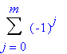 /(j!)*((2l-2j)!)/((l-2j)!(l -j)!)*zl -2j.(m=l/2 if l is even, and m=(l-1)/2 if l is odd. |
|
|